Make arenas, superstars, moves, crowd signs, media packs and match types for the WWE SmackDown vs. Raw 2011 PC port - and look inside the game's own files while you do.
What it is
The Mod Maker is the port's tool for making mods: small files (.svrmod) that add things to the game without touching its own files. You make a mod here, the launcher installs it, and the game picks it up the next time it starts.
Arenas
A new arena on the select pages: edited in 3D here or in Blender, with its banner, loading screen and VS screen.
Backstage rooms
A backstage brawl room rebuilt, or an area of your own with its cars and props.
Superstars
A new playable character with its model, theme, entrance video, attires, picture and crowd signs.
Moves
Moves the game doesn't have, as a pack on its own or inside a superstar.
Crowd signs & media
Signs the crowd holds up; entrance videos, renders, themes, arena screens, menu music, sounds.
Match types
Switches for the port's extra match types, and your own match types from the game's rules.
Other games
Superstars, arenas, moves and entrances from your other discs - Xbox 360 SvR 2007 to WWE 2K17 and all nine PS2 SmackDowns - read straight off the disc images.
Look inside
Every file of the game, every animation, every picture - browse, play, export.
How a mod travels. "Install into game" in the Mod Maker skips the launcher step and writes straight into the Mods folder.
Setting up
Open it from the launcher. On the launcher's Mods tab press Open Mod Maker. It then knows where the game is. Started on its own, it asks for the game folder (the one with the pac folder) once and remembers it; the button at the top right changes it.
Direct3D 11 is all it needs for making mods. The window is fully resizable; Aa at the top right sets the text size.
Optional: Python 3 with numpy and Pillow, and ffmpeg: the launcher's Setup page (First time setup, it opens by itself on the launcher's first start) installs them into the game's Tools folder - Install Python + numpy + Pillow and Install ffmpeg. A Python 3 on PATH with pip install numpy pillow works too. Only needed for the Other games page's SvR 2010 / SvR 2008 / WWE '13 superstar converters, which run the port's Python tools from the Mod Maker Tools folder next to the Mod Maker. The page tells you what is missing.
Optional: Blender (any recent version) to edit arenas as FBX.
Nothing you do here can break the game. Mods live in Mods\ inside the game folder and are laid over the game while it runs. A mod you don't like is one tick in the launcher away from off.
The window
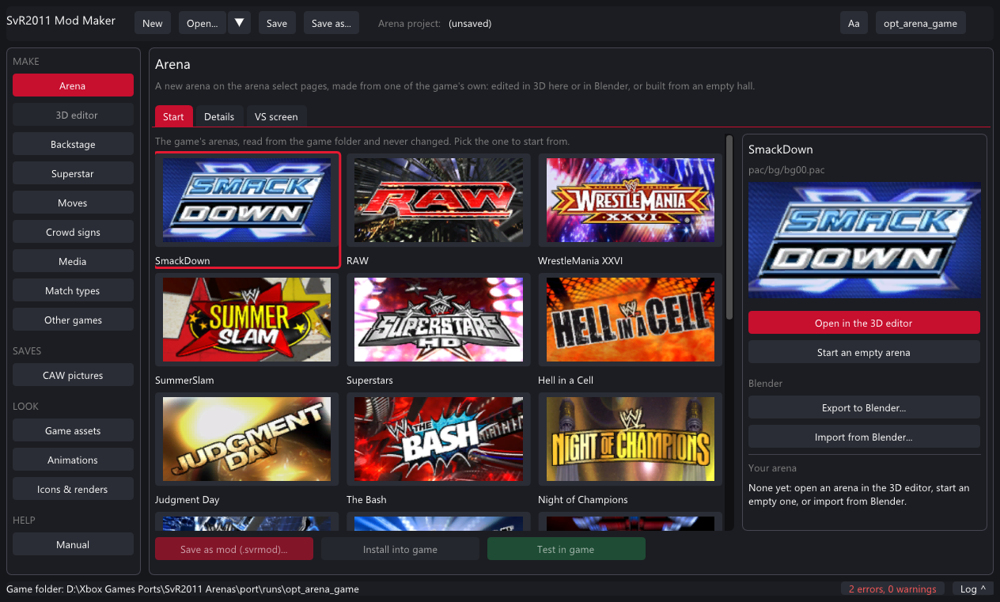
Project: New / Open / SavePagesText size, game folderThe page's tabsSave / Install / TestProblems and the log
Title bar - New starts a fresh project of one kind; Open takes a project or any .svrmod; Save / Save as keep the project; the arrow lists recent files. A * after Save means unsaved changes.
Rail - MAKE pages each make one kind of mod; SAVES edits your Created Superstars' pictures; LOOK pages show the game's assets, animations and pictures; HELP is the built-in manual.
Status line - the last message, what a long job is doing, the count of problems (click it) and Log, which folds the full log out.
Save as mod / Install into game / Test in game - at the bottom of every mod page. Save writes a .svrmod to share; Install writes the mod straight into the game folder; Test installs it and starts the game.
Shortcuts: Ctrl+S saves the project, Ctrl+O opens one.
Projects, mods and problems
Two files, one tool. Keep the project while you work; give people the mod.
Problems
Every mod page checks its work as you type. The list sits at the bottom of the page and in the status line:
red something is missing or wrong - Save and Install stay off until it is fixed (hover the greyed buttons to read why).
yellow a warning: the mod works, but you may want to know (no banner picture, a long name, a loud theme...). You confirm once when saving.
Hover any (?) for a longer explanation of a field.
Tutorial: port from another game
Bring a superstar, an arena, moves, an entrance, an attire or a belt's look from your other WWE discs, straight from the disc images - nothing extracted:
Xbox 360: SmackDown vs. Raw 2007, 2008, 2009 and 2010, Legends of WrestleMania (superstars, entrances and arenas; movesets stay the base's), WWE '12, '13, 2K14, 2K15, 2K16 and 2K17.
PS2, all nine: WWF SmackDown! Just Bring It, Shut Your Mouth, Here Comes the Pain, SmackDown! vs. Raw, SvR 2006, and the PS2 SvR 2007, 2008, 2009 and 2010.
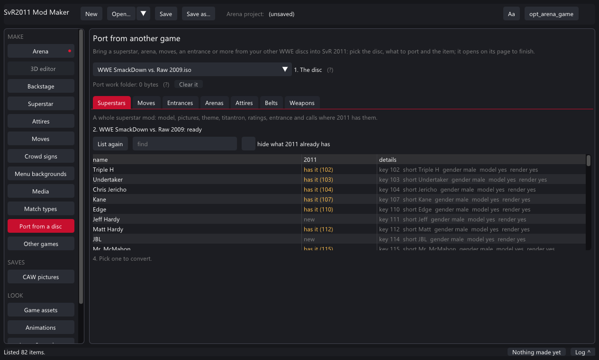
SvR 2009's superstars, read off the disc: "has it" for the ones 2011 already has, "new" for the rest.
Port from a disc on the rail. 1. The disc: your disc images are listed by game (the Mod Maker looks in D:\Roms\Xbox 360\WWE and D:\Roms\Playstation 2\WWE Games; Game assets → Disc folders... adds others). An extracted folder works too.
Pick what to port: Superstars, Moves, Entrances, Arenas, Attires, Belts or Weapons. The line under the tabs says whether this game is ready for it ("not portable yet" means its format is still being worked out).
3. List what's on the disc. Find one by name; tick hide what 2011 already has to see only what's new.
Pick it, then 4. Convert. It takes from seconds to a couple of minutes; the status line shows how far it is. A PS2 superstar can have more outfits than the four a mod holds: Choose attires... draws each of them - click up to four, the number on each is the attire it becomes in your mod (untouched: the first four).
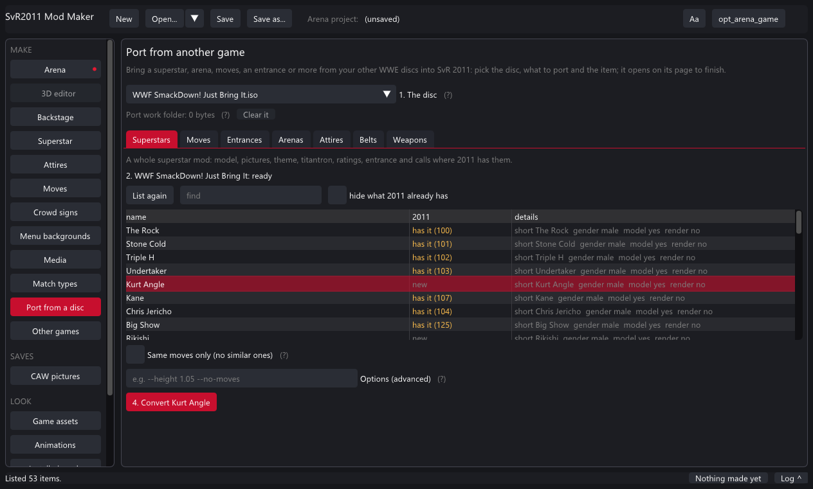
A PS2 disc: Just Bring It's superstars, Kurt Angle picked.
5. Open it to finish: a superstar opens on the Superstar page, an arena in the 3D editor, moves and entrances on the Moves page; belts and weapons install as a texture pack. What the conversion left out is listed under the button.
What comes with a superstar
The model (fitted to what the game holds), the pictures, the theme and titantron, the ratings and abilities (fitted onto 2011's), the entrance, and the superstar's own moveset and taunts. Each move slot gets the same 2011 move where 2011 has it; a move 2011 doesn't have is ported into a move pack inside the mod (WWE '12 and later), or - for the PS2 games - a similar 2011 move stands in. On the Superstar page the moveset marks those slots similar: hover one to see what it stands in for, and swap it if you like.
Same moves only (no similar ones) (PS2 games): ticked, only the moves 2011 has too come over; the rest keep the fighting style's.
Pictures for WWE 2K17
2K17's renders aren't named after the superstars, so the Port page can't tell which is whose. Picking a 2K17 superstar shows The select picture: every render on the disc. Click the one that is this superstar, or No picture to keep the base superstar's.
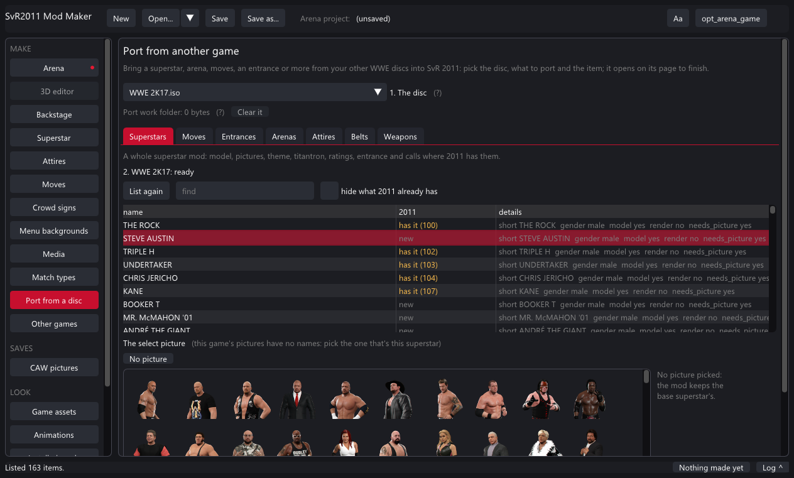
WWE 2K17: pick the superstar's render yourself.
Arenas that can't be ported
Some arenas are greyed out in the list: hover one for why. Either it crashes 2011 when it loads (found by playing every converted arena), or it isn't an arena at all - in WWE '12 and later, bg60 and up are backstage rooms and studio / photo stages, which show a white mat over a black void on an arena slot.
Entrances have a Full preview button after converting: the whole entrance played before you install it (see Watch a whole entrance).
Needs Python (see Setting up): the converters are the port's Python tools. WWE '12 - 2K17 arenas convert without it (Other games page).
The work folder (Mods\.convert\port in the game folder) keeps the converters' copies of the disc's files - a superstar can take close to 1 GB. Its size shows on the page with Clear it; above 3 GB the oldest are removed after a conversion.
Tutorial: your first superstar (Simple mode)
Never made a mod? Simple mode walks you through a superstar one step at a time. Each step has one thing to choose and a line saying what it is. Anything you skip comes from the fighting style you pick, so your superstar works from the very first step.
Press Superstar on the rail, then the red Make my first superstar (Simple) button at the top. (Full editor takes you back to the full page at any time: nothing is lost either way.)
Name and style: type a name and pick how they fight. The style gives them a full set of moves, an entrance and their strength to start with.
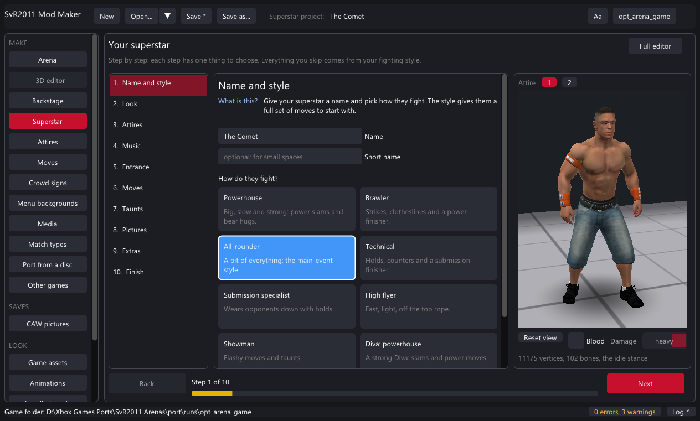
Step 1: the steps on the left, the step in the middle, your superstar in 3D on the right.
Look: what your superstar looks like. Three ways in:
A superstar in the game: click anyone on the roster.
From an older game: pick one of your disc images (any game the Port page reads), list its superstars, convert one, then choose Just the look or Everything (look, music, pictures, moves). From a PS2 game, Choose attires... picks which four of their outfits come over, in which order.
Look: click a superstar on the roster.
The Materials tab beside Model lists each part of the model with a small picture of it: its shine, bumps and colour, see-through, Both sides and Flip faces (see Faces). The 3D view shows each change as the game draws it.
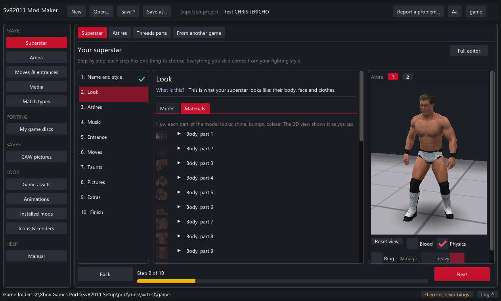
Look → Materials: every part of the model.
Attires: up to three more outfits - another superstar's, or a model file - each with a name. See it shows it in 3D. Below them, each attire's entrance gear (see Entrance gear).
Music: pick a song. Match the game makes it as loud as the game's own songs.
Entrance: pick an entrance, and if you like a big screen video (Make one from any video...).
Moves and Taunts: the signature moves, finishers and taunts. Watch it plays the move on your superstar; Change... picks another.
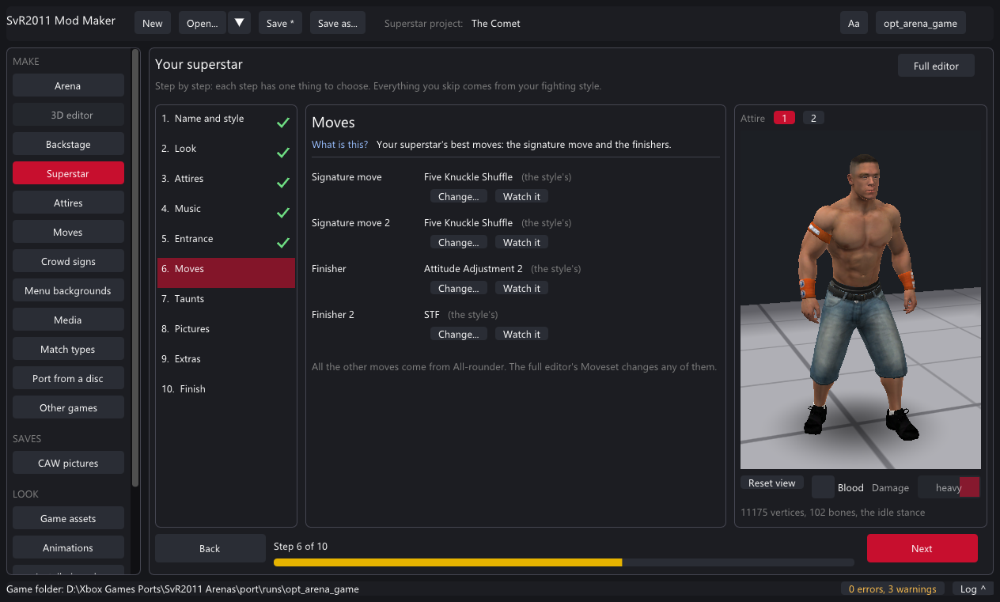
Moves: everything else comes from the style.
Pictures: the pose on the select screen, and the select picture. Turn and zoom the 3D view (drag, scroll), then Take it from the 3D view - or use a picture of your own.
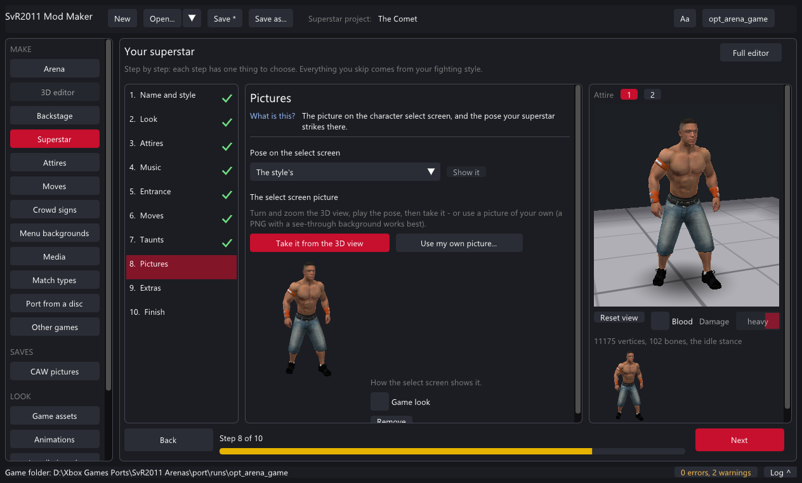
Pictures: the 3D view becomes the select screen picture.
Extras: strength, height and what the announcer calls them. Skip it if you like.
Finish: a summary with Change links, and anything to check - Must fix (red) or Tip - each with Fix it, which takes you to its step. Then Save as mod, Install into game or Test in game.
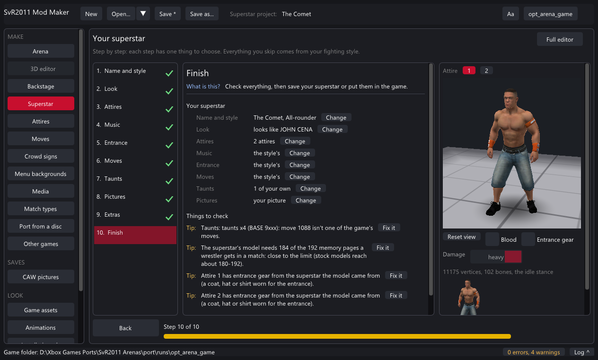
Finish: check, then save or play.
Under every 3D view: Reset view, and Blood with its Damage level - the blood a superstar gets in a match. It starts off.
Tutorial: a superstar from a 3D model (FBX)
A model of your own - from Blender, Unity / VRChat, Mixamo, Rigify, 3ds Max or Unreal - as a playable superstar. It needs a skeleton (a rig) with skin weights; Mixamo can rig a model for free. Simple mode: Look → Import a 3D model (the full page: Model from an FBX). It goes in five steps, one at a time - the buttons at the top jump to any of them, Back / Next at the bottom go in order.
1 Model: Pick an FBX file.... It shows the rig it found, the parts and how many have a picture.
2 Skeleton: the model's bones matched to the game's by their names. Green: all the main bones are matched - usually there's nothing to do. Otherwise pick the game's bone for the model's bone in the table; a bone left unmatched moves with its parent.
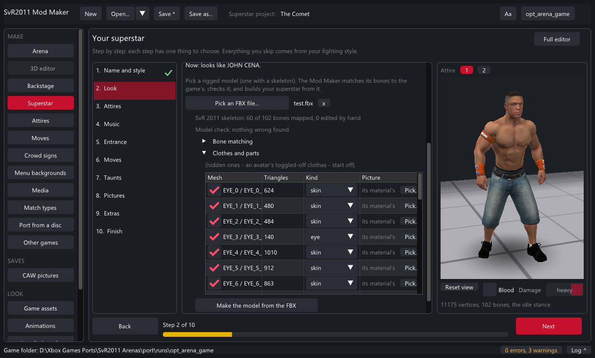
Step 2: the model's bones and the game's.
3 Materials: each material of the model with its picture. For every part that uses it: its Colour picture (pick one when the FBX has none - it comes out plain grey otherwise), Bumps picture (a normal map), Shine picture (grey: white shines most), Draw both sides, Flip faces and See-through where clear. Set each part on its own sets them part by part. The same list is the Look step's Materials tab.
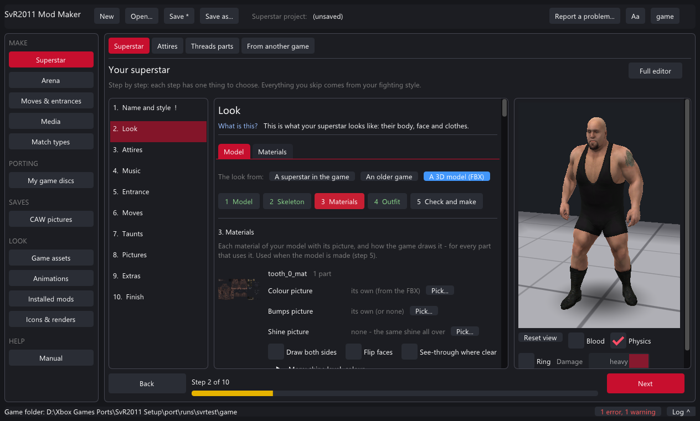
Step 3: the materials.
4 Outfit: the parts your superstar wears - an avatar's hidden outfits start left out - and what each is: body / clothes, eye, hair or eyelashes. This outfit becomes attire 1; more attires come in the Attires step.
5 Check and make: the model check lists what's wrong, in plain words with a fix for each (too many polygons, parts without skin weights, missing bones, pictures it can't find, no UV map). Make the model poses it into the game's stance, moves its skin onto the game's bones, packs its pictures into one sheet, cuts it down to what the game holds (about 10,500 vertices) and builds the model. After Make says what it did - how much it cut, its real height and the Height it gets, how much of the game's memory it uses. Changed something? Make it again.
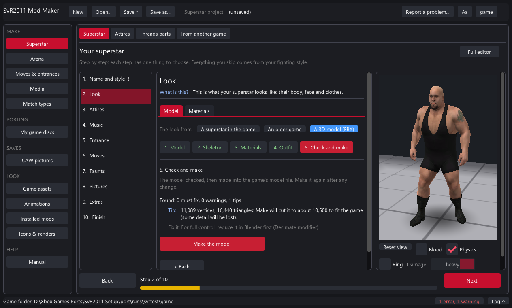
Step 5: the check, then Make.
Look it over in the 3D view (it plays the game's idle stance), then carry on with the next steps.
Faces: both sides, flip faces
The game draws most parts from the front only. Draw both sides draws the back too: capes, open jackets, skirts, hair cards, single-layer cloth - anything you can see the inside of (on a skin part it also turns its sweat off). The import already turns every part the way the game wants it; Flip faces is for a part that still shows inside out in the game (dark where it should be lit, its inside showing) - its faces point inward in the FBX. The 3D view draws both the way the game does, so what looks right there looks right in a match.
See-through cuts where the colour picture is transparent: an alpha below about 0.2-0.3 (50-80 of 255) is a hole, the rest is solid - the game has no half see-through on superstars. The picture needs transparency (a PNG with alpha).
Export to FBX
The other way round: Export to FBX... under the 3D view on the Superstar page and the Installed mods page writes the superstar's model (the attire shown) with its skeleton, skin weights and textures, for Blender and other tools. Edit it there, then bring it back with Import a 3D model.
Far too many polygons? The Mod Maker cuts the model to fit the game, but you choose better what to keep: reduce it in Blender first (Decimate modifier, or delete hidden parts).
Tutorial: your first superstar
A new playable character under the M tile of the character select, in about five minutes. You need a character model pac - for this tutorial, one of the game's own.
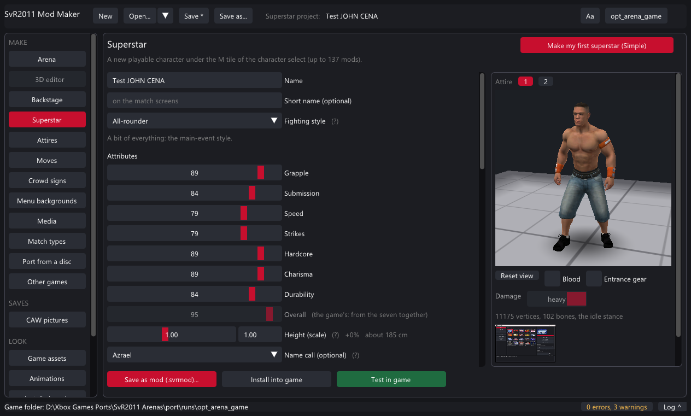
The Superstar page: the form on the left, the model playing its idle stance on the right.
Press Superstar on the rail.
Name: type the superstar's name (up to 31 letters). A short name goes on the match screens if the name is long.
Fighting style: pick one. It decides the move-set, the entrance motions and the starting attributes (from one of the game's superstars underneath). Move the attribute sliders if you like: Overall is worked out from the seven the way the game does it. Height (scale) makes the superstar taller or shorter than the base (1.05 = 5% taller; the preview shows it) - for converted models that come out the wrong size.
Model (ch.pac): press the button and pick pac\ch\ch139.pac from the game folder (John Cena's model). The preview shows it standing in its idle stance - drag to turn it. A model that doesn't load shows why under the preview.
Optional: Theme song (mp3, m4a, wav, flac, wma, ogg), Entrance movie (press From a video... next to it to make the 320 x 320 Bink from any video or picture), Attires 2-4 (another model pac's first attire each), Crowd signs the fans hold, a Name recording for the ring announcer, and the Select picture (a PNG with a transparent background looks best: it is cropped to the person, who fills the picture top to bottom like the game's renders; the bust, the model's own portrait and the face icon are made from it). Game look moves its tone toward the game's renders; Bust picture gives the small render its own head-and-shoulders picture, Full body picture the full-body render (otherwise the select picture is used).
Moveset (its own section): the style's moves slot by slot. Pick another for any slot by name - each slot lists the game's moves of its kind - and press > to watch it in the preview, done to the style's superstar.
Optional, under More: the entrance - any installed one, by number and name, including the ones the Port page converts; Full preview plays it whole - an announcer name the game has clips of, the abilities and a move pack. Attires 2-4 can each have their own entrance.
Check the Problems at the bottom: red ones must go. Then Save as mod (a .svrmod to share) or Install into game, or Test in game to install and start the game right away.
In the game: character select → the M tile (EXTRA) → your superstar is in the list, with a MODDED badge.
Theme songs play at full level while the game's own are about 7 dB quieter. Under the theme song, Theme volume → Measure → Match the game sets the volume so yours sits with the game's (about -24 LUFS).
Save the project too (Ctrl+S). A .svrproj holds every setting and a copy of every file you picked, so you can come back and change the mod later - even from another PC.
Only manifest.txt and ch.pac are required; everything else falls back to the style's.
Tutorial: an attire for a superstar
A new attire for one of the game's superstars (or a superstar mod), or one replacing an attire they have - its own mod, on CHANGE ATTIRE.
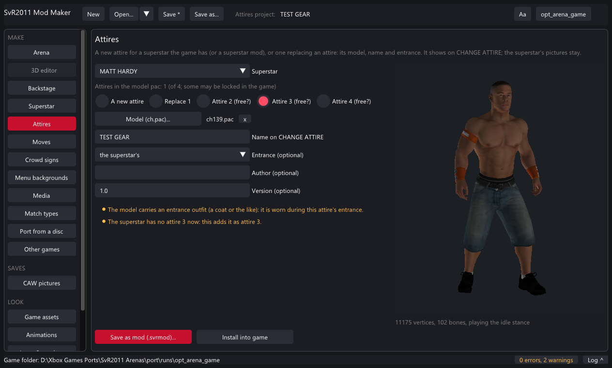
An attire for Matt Hardy: the slots he has, the free ones, the model in the preview.
Attires on the rail. Pick the Superstar. The page shows the attires their model pac has.
A new attire, or Replace one (4 at most - the game's limit; slots marked free? are free if the game allows that superstar more).
Model (ch.pac): any character model pac - one of the game's, a superstar mod's, or one the Port page converted. Its first attire becomes this attire.
Give it a name for CHANGE ATTIRE and, if you like, its own entrance.
Save as mod or Install into game. The superstar's pictures stay theirs: the game has no per-attire render.
Tutorial: entrance gear
Some superstars wear something only for their entrance - Undertaker's coat, Cena's shirt - and take it off at the ring. In the game that is a second model of the whole superstar wearing it, used until the entrance ends. Your superstar can have one per attire.
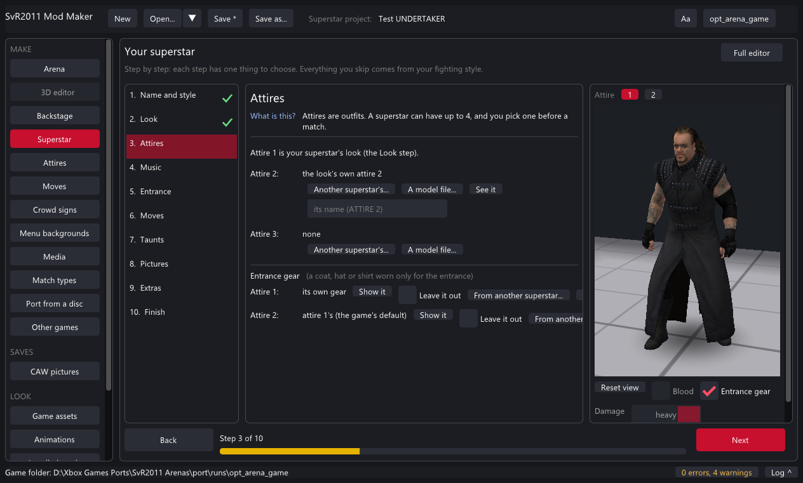
The gear rows under the attires; Entrance gear under the 3D view shows it.
The gear rows are on the Superstar page (under the attires), Simple mode's Attires step and the Attires page. Each attire says what it wears: its own gear, attire 1's (an attire without gear of its own wears attire 1's - the game's rule), or none.
From another superstar... lists the game's superstars with entrance gear: pick one and their gear is fitted onto your model - sized to it, on its skeleton.
From a 3D model... takes an FBX of just the gear - a coat, hat or shirt skinned to a humanoid rig (bone names matched as in FBX import) - and builds it onto your model.
Show it puts that attire's gear in the 3D view; Leave it out drops it (the superstar walks out in the attire itself).
Superstars with entrance gear take no new attires. Undertaker, CM Punk, John Cena, Shawn Michaels and John Morrison: an attire mod can replace one of their attires, but a new one hangs the match load. Superstar mods built on their models are fine.
Tutorial: watch a whole entrance (Full preview)
A window that plays a whole entrance - all five parts, from the titantron intro to the pose in the ring - in the practice arena, with the entrance's own camera, the superstar's fingers, the theme and the titantron.
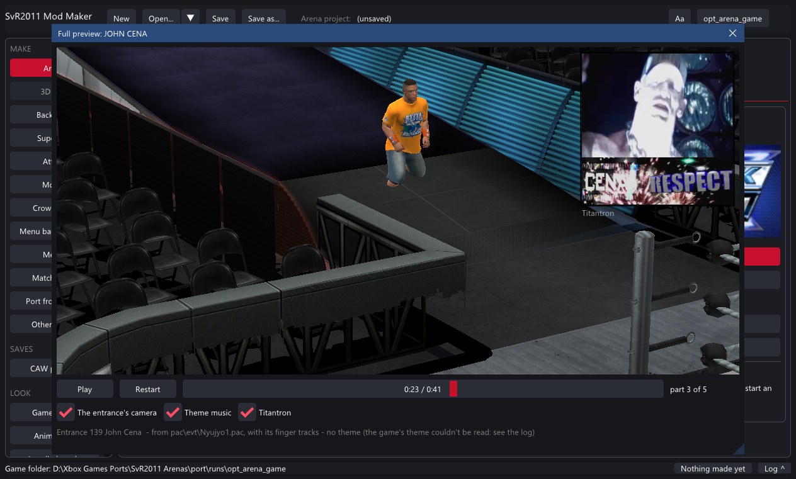
John Cena's entrance, part 3 of 5, with his titantron.
Open it with Full preview on the Superstar page (your superstar's entrance on your model, in its entrance gear) or on the Port page after converting an entrance.
Play, Restart and the timeline; untick The entrance's camera to look around yourself (right drag turns, the wheel zooms), and the theme or the titantron to leave them out.
Bink 2 titantrons (WWE 2K15 and later) need converting first: the window says so (see Bink 2 under From other games).
Tutorial: your first arena
A new arena on the arena select pages, made from one of the game's own, edited in the 3D editor.
Start: pick the arena to start from. Double-click a tile or press Open in the 3D editor.
Arena on the rail → the Start tab. Click the arena to start from (its room, ring and VS screen style are what your arena plays in). Double-click it.
The 3D editor opens. Right drag orbits, middle drag pans, the wheel zooms. Click an object (or pick it in the list on the left); the orange wireframe is the selection.
Move it: Move (W) then drag an axis of the gizmo or drag the object on the floor. Turn (E) and Scale (R) work by dragging left and right. Arrow keys nudge by the snap step. Ctrl+Z undoes, Ctrl+Y redoes.
Give it a new look: in Object on the right, pick another of the arena's textures or Use a picture... of yours. Pictures from a folder... (under Add) replaces every texture that has a same-named picture in a folder - a whole retexture at once.
Add things: a box, an object from an OBJ / FBX file, or anything from the 20 arenas through Library (a ramp, a stage, a screen) placed where it was or at the view centre.
Ring Kit: each rope's colour or picture (or no rope), the turnbuckles, the corner pads, the low rope's height and gap. Lighting: presets, a colour and strength, the crowd on or off.
Watch the Size budget: an arena must fit the room the game gives the original. When it is over, the biggest textures are halved at save.
Back on the Arena page, Details: the name, a banner (any picture, shown at 256 x 128) and a loading screen (1024 x 512). VS screen: replace any picture of the screen shown before the match.
Save as mod or Test in game. In the game, the arena sits on the select pages after the game's own (RIGHT past the last one).
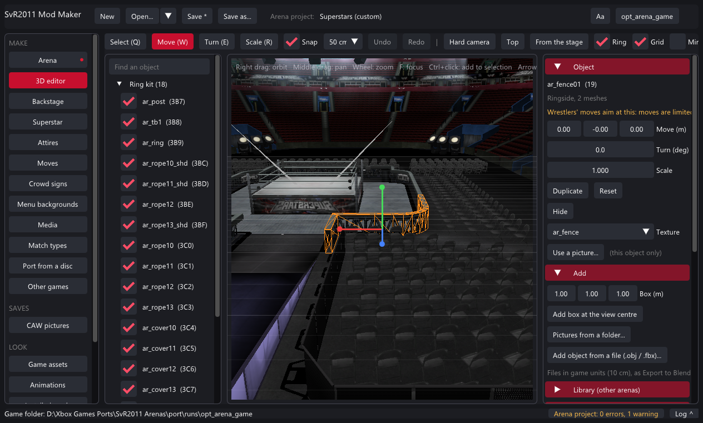
The 3D editor with a barrier selected (orange). The grid is 1 m; the snap step is 50 cm here.The outliner groups objects by these zones.
Start an empty arena (on the Start tab) keeps only the ring, the floor and the ringside parts, so you build the rest from the Library and your own files.
Tutorial: an arena in Blender
On the Arena page's Start tab, pick an arena and press Export to Blender.... Choose a folder: you get arena.fbx, a textures\ folder of PNGs and arena.json. The folder opens.
In Blender: File → Import → FBX, pick arena.fbx. 1 Blender unit = 1 metre. Every object is named like the game's; textures are already assigned.
Edit: move and reshape objects, replace textures (keep the file names, or add new PNGs next to them), add your own meshes. Keep the ring where it is. Export as FBX (File → Export → FBX, selected or all).
Back in the Mod Maker, same arena tile, Import from Blender... and pick your FBX. Changed meshes, new objects and new textures come in; the log says what happened and what didn't. Edit on in the 3D editor if you want, then save as a mod.
Rules the game imposes: an arena must stay within its original's size (big new textures get halved); each model's unpacked size has a ceiling (very heavy meshes crash the load - the editor's Size budget and the import log warn); the arena is modelled on the hard-camera side.
Tutorial: a backstage room
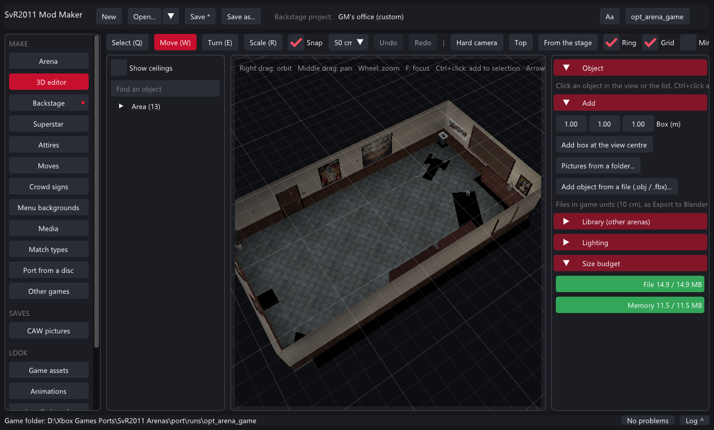
The GM's office, opened from the Backstage page. Only that room is shown and edited.
Backstage on the rail. Pick the area (parking lot, GM's office, locker rooms, interview area, catering) and press Open the area in the 3D editor.
Edit the room like an arena - but keep the floor and walls where they are (the game's cameras and the fighting box expect them). The cars, crates and weapons are placed by the game and are not shown.
Name it. Save as mod or Test in game: the game plays your room in that area's backstage brawls. One backstage mod plays at a time.
An area of its own
Tick An area of its own to get a row of your own in ONE ON ONE → BACKSTAGE instead of replacing the room: give it a row name, a fight box (centre and half sizes in game units, 1 = 10 cm), a camera distance cap and a minimum camera height for small areas, and optionally a gimmick pac with the area's own cars and props. The Other games page's SvR 2008 tab makes a complete one from the 2008 Parking Lot.
Tutorial: crowd signs
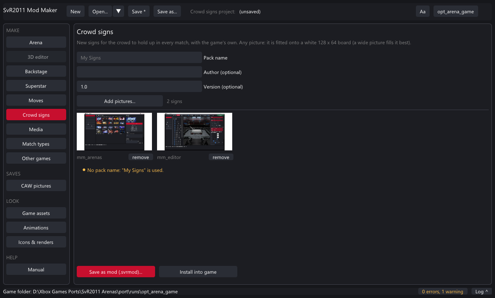
Any picture becomes a sign: fitted onto a white 128 x 64 board.
Crowd signs on the rail. Name the pack.
Add pictures... - any pictures, several at once. Wide pictures fill the board best. Remove any with remove.
Save as mod or Install. The crowd holds your signs in every match, mixed with the game's own.
Signs for one superstar's fans go on the Superstar page instead (Crowd signs, up to 4).
Tutorial: videos, renders, music
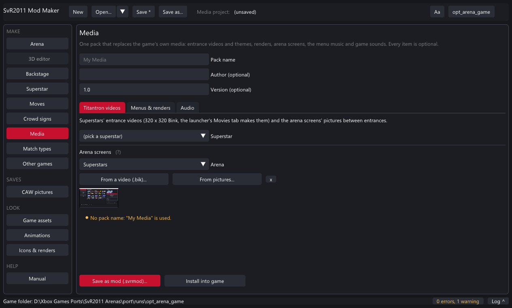
One pack, three tabs; every item is optional.
Media on the rail. Name the pack.
Titantron videos: pick a superstar and its new entrance video (a .bik, or From a video... to make one), and for any arena the screens' pictures between entrances (10 frames from a video, or pictures shown in turn).
Menus & renders: pick a superstar and a picture - the render, the bust and the face icon are made from it.
Audio: a superstar's entrance theme, the menu music, and any game sound by its event name (without Play_, e.g. SVR10_Chant_Sena_001).
Save as mod or Install; it takes effect the next time the game starts.
Tutorial: new moves
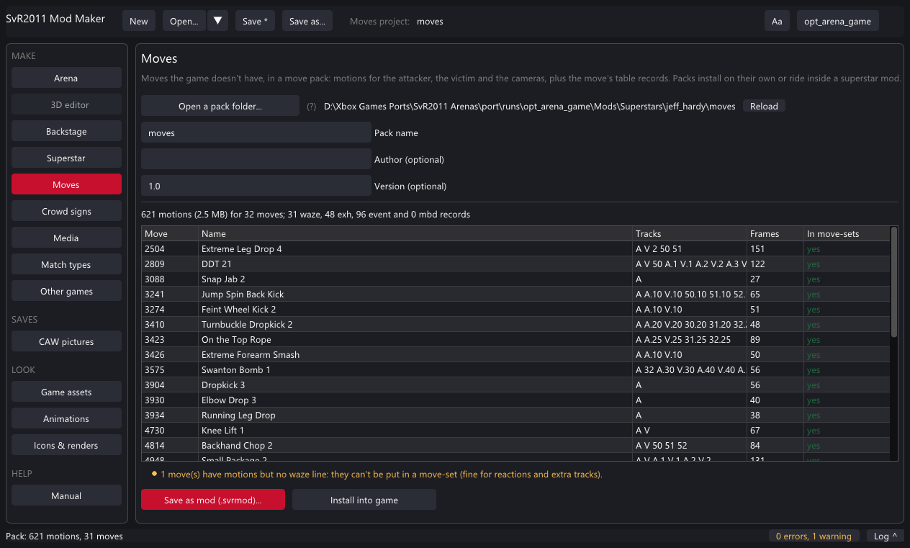
A move pack opened: every move with its name, tracks (A attacker, V victim, numbers props and cameras) and frames.
Moves the game doesn't have come as a move pack: the motions and the move's table records. Packs are made from your other discs by the Port page (Moves tab), from SvR 2010 by the Other games page (SvR 2010 moves tab, or a whole superstar), or by hand with the port's tools.
Moves on the rail → Open a pack folder... (a folder with pack.txt and motions\). The page checks every line and lists the moves.
Red problems: missing motion files, bad records. Yellow: moves with motions but no category bits (they can't be put in a move-set - fine for reactions).
Save as mod (installs into Mods\Moves) - or, to carry the moves inside a superstar, pick the same folder on the Superstar page under More → Move pack folder.
The game merges every enabled pack into copies of its files when it starts (a few seconds the first time, then only when a pack changes). Use the moves in CREATE A MOVE-SET: every move list ends with the packs' moves, named MOD: <move>.
A move only plays from a moveset. The game gathers each wrestler's moves from his moveset, so a move that is only in a pack is never used. The Used by column says which movesets have each move, and the page warns about moves that are in none - see the next tutorial.
Tutorial: port a move and use it
A move from SvR 2007 - 2009 or WWE '12 - 2K17 into a superstar's moveset, ready for a match. (A ported superstar brings its moves by itself.)
Port from a disc → pick the disc → Moves tab → 3. List what's on the disc. Find the move by name; tick hide what 2011 already has.
Template (a 2011 move): the 2011 move the new one is built on - its table record (what kind of move it is, where it can be done, the damage) and its timing. Automatic picks one of the same kind; if the result shows a poor match (a powerbomb built on a strike), pick one by name - a powerbomb for a powerbomb - and convert again.
4. Convert. The move gets a free 2011 move number of its own (it never takes one another installed pack uses), and the page says which template it was built on. 5. Open it to finish opens the pack on the Moves page.
Install into game on the Moves page (or Save as mod to share it).
Put it in a moveset - without this the game never plays it:
a superstar mod you have installed: select the move on the Moves page, then under Put it in a superstar mod's moveset pick the mod and a slot (only slots the move fits are listed) → Put it in;
your superstar project: on the Superstar page, Moveset → the slot → the installed packs' moves are at the top of the list (marked with their pack);
any wrestler or Created Superstar, in the game: CREATE A MOVE-SET - the pack's moves are at the end of each list as MOD: <move> (in the match the move keeps its own name).
Removed a pack? Movesets keep its moves. Until the pack is back, a match plays the slot's ordinary move of that kind instead (the log says which); put the pack back and the move is back.
The Moves page's Used by column turns from "no moveset" to the number of movesets once it is in one.
Tutorial: match types
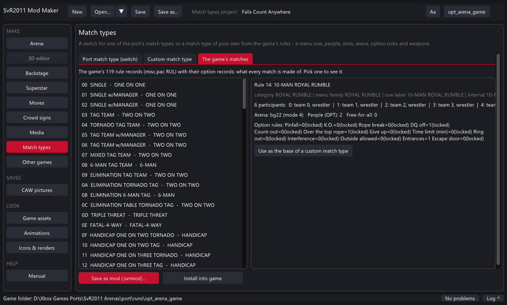
Every match the game has, decoded: participants, arena, option rules.
Match types on the rail.
Port match type (switch): pick one of the match types the port adds (Falls Count Anywhere, Championship Scramble, Lumberjack, Free-Roaming Backstage, Weapons Everywhere, Slobber Knocker, Three Stages of Hell, Elimination, Mystery Opponent...) and save its switch mod. Players turn it on or off in the launcher.
Custom match type: pick a base match (by name, from the 119), a menu list and submenu for its row, people and free-for-all, the slots, an arena, the option rules you want set (with a lock to stop players changing them) and whose weapons lie around the ring. The manifest.txt it writes is shown at the bottom.
The game's matches is the reference: every rule record with "Use as the base".
Custom match types need the game side that is being built after 2.0.5; the page writes the agreed format (docs/MATCH_TYPE_MODS.md) and warns until the game reads it. Custom types play offline, or online when both players have the mod.
Tutorial: from other games
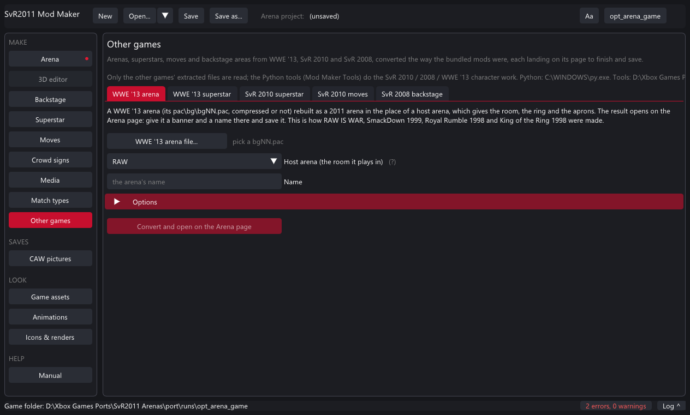
Five converters, each landing on its page to finish and save.
A WWE '12 - 2K17 arena (built in)
Other games → WWE '12 - 2K17 arena. Pick the arena's pac\bg\bgNN.pac (compressed or not) - or start from the Port page, which reads it off the disc.
Pick the host arena - the 2011 arena whose room, ring and aprons it uses (RAW was used for the bundled ones). Name it.
Options if needed: host ring / aprons / crowd, barrier corners, the full rope, pruning unused pictures, role lights, the canvas tone, meshes to drop (a model over about 430 KB crashes the load; the report after a conversion names the heavy ones).
Convert. A minute later the arena opens in the 3D editor; the Arena page takes its banner and name; save.
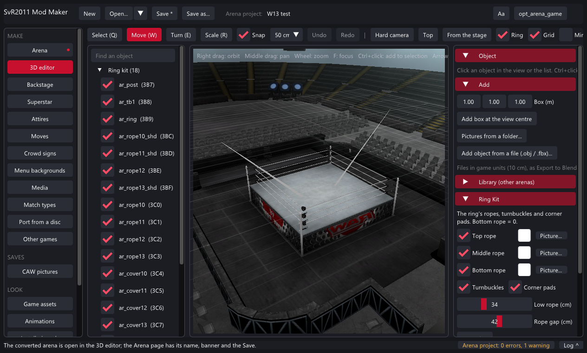
A WWE '13 arena after conversion, in the editor.
A WWE '13 superstar, an SvR 2010 superstar, SvR 2010 moves, the SvR 2008 backstage
These run the port's Python tools (see Setting up). Point each tab at the other game's extracted pac folder; the SvR 2010 superstar tab has a Survey that lists the ids and names. The result opens on the Superstar, Moves or Backstage page as a normal project. The Port page does the same from the disc images, for more games.
Bink 2 videos (WWE '13 and later)
bg60 and up in WWE '12 - 2K17 are backstage rooms and studio stages, not arenas: the page won't convert them.
Titantrons and movies of the later games are Bink 2. Enable Bink 2 conversion on the Other games page points the Mod Maker at RAD Video Tools (free from RAD Game Tools) or an ffmpeg built with a Bink 2 decoder - neither comes with the Mod Maker. Then From a video... takes .bk2 files, and converted entrances bring their titantron.
Tutorial: Created Superstar pictures
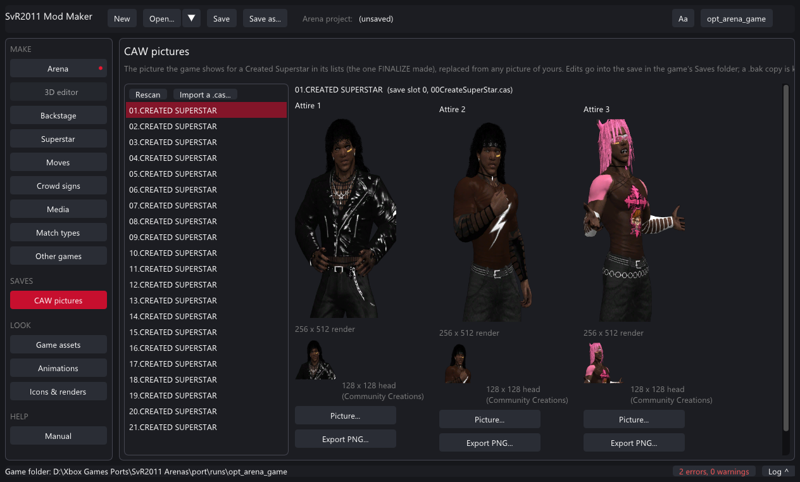
A Created Superstar's pictures, one per attire, read from the save.
Close the game. CAW pictures on the rail lists your Created Superstars (from the game's Saves folder).
Pick one. Each attire shows the 256 x 512 render the lists use and the 128 x 128 head the Community Creations preview uses.
Picture... under an attire: any picture of yours (a transparent background fits the lists best). The head is cut from its top, or pick a Head picture.... Undo drops a pending change.
Save into the game's save. The save's checksums are redone; a .bak copy of the save is kept the first time.
Import a .cas... brings someone else's Created Superstar into a free slot (its Paint Tool logos come through the launcher's Saves tab).
Installed mods and the mod doctor
Installed mods (LOOK on the rail) lists every mod in the game's Mods folder by type, with its version and an on / off switch. Pick one to look at it: a superstar plays its moveset, taunts and pose on its model (attires 1-4, Export to FBX...), a move pack plays its moves on any superstar, an arena shows in a 3D view you can fly around but not change, picture mods show their pictures. Open in its page opens it to edit.
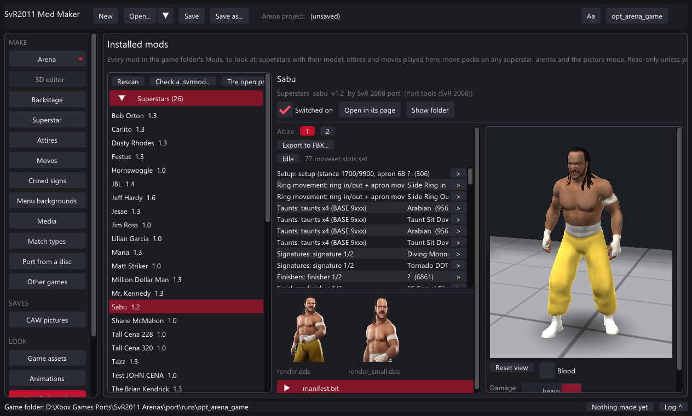
A superstar mod: its moveset (press > to watch a move), pictures and model.
The mod doctor
Every mod is checked the way the game and the launcher read it - the manifest, the files, the model's size and memory, pictures, sounds, ids - and what's wrong is written in plain words with a fix, must fix or check:
on a picked mod, at the top of the Installed mods page;
Your mods together: limits the mods only hit together - more than 137 superstar mods switched on, superstars the game left out at its last start, more movies, crowd signs or backstage rooms than the game has room for;
Check a .svrmod...: a mod file someone sent you, before you install it.
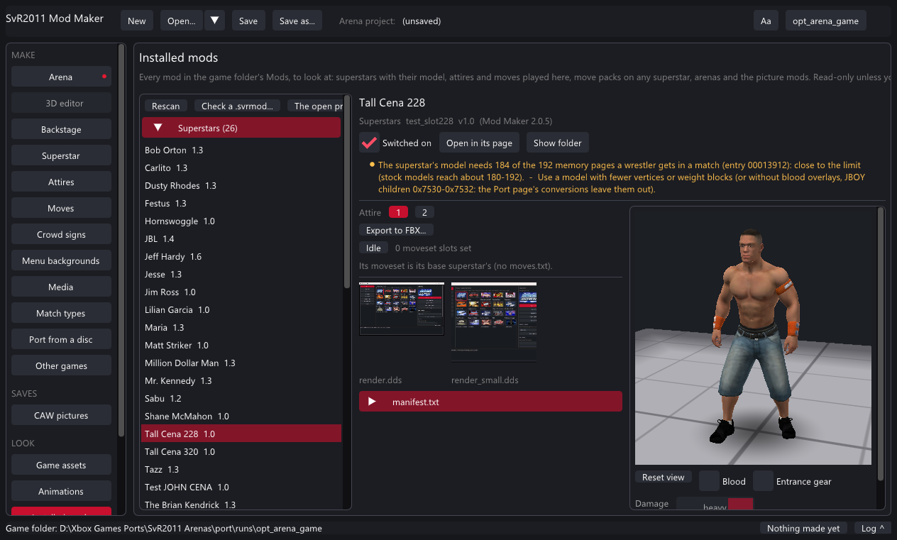
A warning on a superstar mod: its model is close to the game's memory limit.
Looking inside the game
Game assets
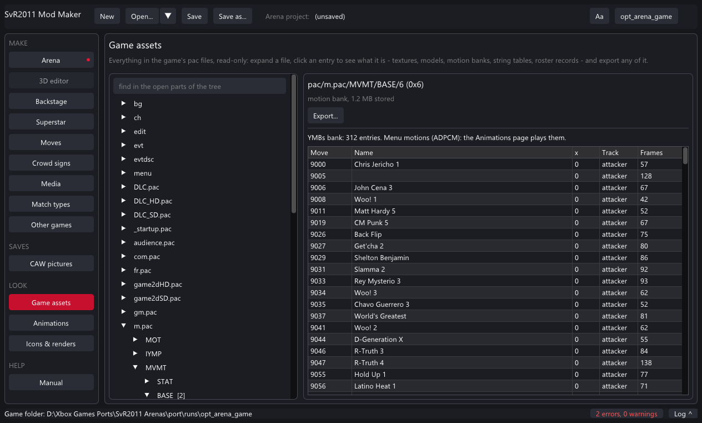
A motion bank inside m.pac: every motion with its move name.
Expand the folders and pac files on the left; nothing is read until you look. Each thing shows as what it is: textures (zoom, checkerboard for transparency), texture bundles (click a thumbnail), models (meshes, nodes, textures), motion banks, string tables (every text by id), roster records, text, or bytes. Export writes any of them out, textures as PNG too.
Look in switches from this game to any of your disc images - Xbox 360 and PS2 - or a folder, read as they are. WWE '13 and later pack most files with xcompress; they unpack as you open them.
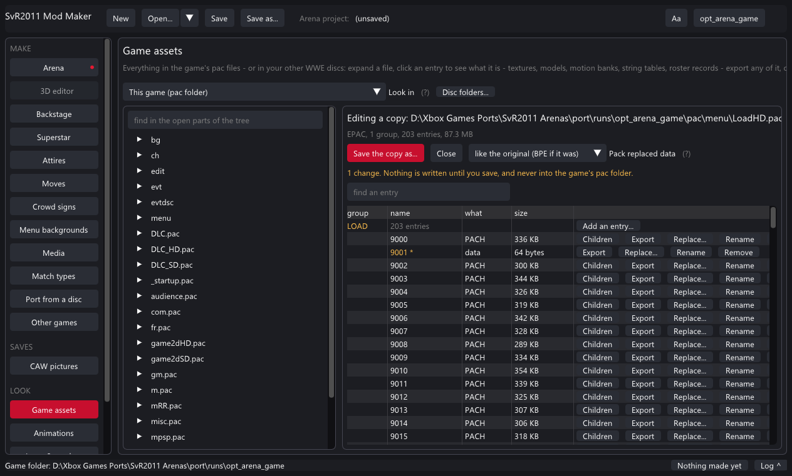
Editing a copy of a pac: export, replace, rename, remove or add entries; save the copy elsewhere.
Edit a copy of this pac... on any pac file opens it in the pac editor: export, replace, rename, remove or add entries - and the children of the PACH entries inside them - then Save the copy as.... Replaced data is packed like the original. The game's own pac folder is never written; a copy saved unchanged is byte for byte the original.
Animations
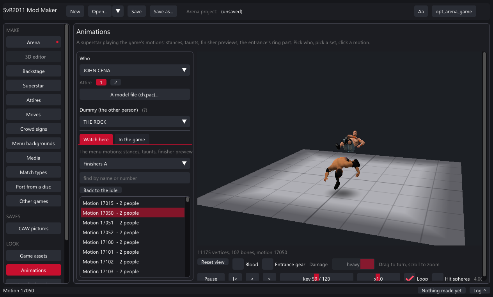
A finisher preview with the dummy on the victim's track.
Pick a superstar (or any ch.pac), optionally a dummy, then a set: stances, taunts, the entrance's ring part, finisher previews, abilities. Play, pause, step, scrub, speed, loop. The camera turns (left drag), tilts (right drag), pans (middle drag) and zooms (wheel).
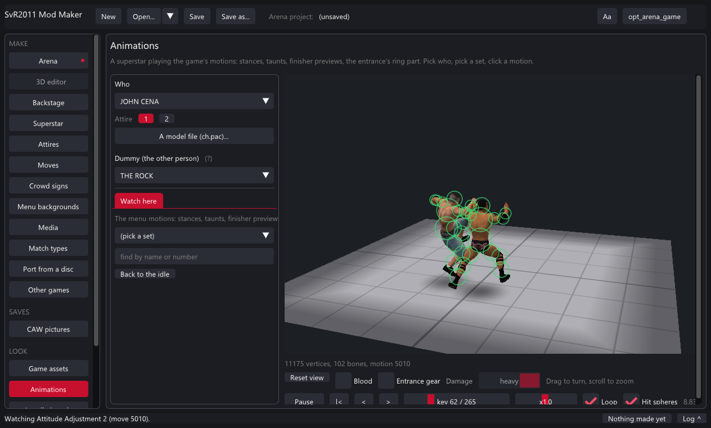
A match move watched here: the superstar does it, the dummy takes it.
Match moves: pick one by name - every one of the 2,800 the game ships - and Watch here plays it, the superstar doing it and the dummy taking it, fingers and all. Play in game starts a test match instead, where the move is done to the dummy every few seconds (the way to see a move pack's moves). Blood shows the game's blood at three levels; Hit spheres shows where a superstar can be hit (green) and, in the moves that switch them on, the attacking ones (red).
Icons & renders
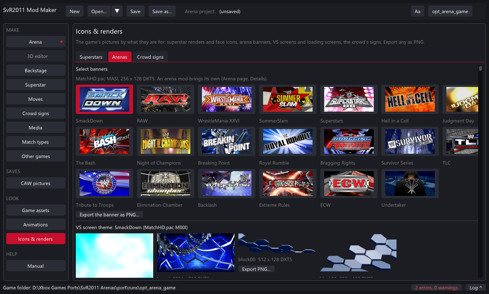
Banners, VS screen themes and loading screens; the Superstars tab has every render and face icon, the Crowd signs tab all 437 signs.
conversions from your other discs → the pages above
-
-
Other games
conversions → the pages above
-
-
CAW pictures
edits the Created Superstar saves
Saves\
the select lists
Installed mods
nothing: every installed mod shown and checked (the mod doctor)
-
-
Game assets / Animations / Icons & renders
nothing: viewers and exporters
-
-
Reference: 3D editor controls
Do
How
Orbit / pan / zoom
right drag / middle drag / wheel; F focuses the selection; Hard camera, Top, From the stage are presets
Select
click an object in the view or the list; Ctrl+click adds to the selection; Ctrl+A every movable object; Esc none
Move / Turn / Scale
W / E / R (Q select only); move drags an axis or the floor, turn and scale drag left / right; Snap rounds to the step (10 cm - 1 m)
Nudge
arrow keys move by the snap step (Shift x10), PageUp / PageDown up / down
Undo / redo
Ctrl+Z / Ctrl+Y (moves, textures, hiding)
Duplicate / hide / delete
Ctrl+D; the list's ticks; Delete hides a game object or removes an added one
Textures
Object → texture list or Use a picture...; Add → Pictures from a folder... for many at once
Picture of the view
Picture... in the toolbar saves a PNG
Reference: the .svrmod format
A .svrmod is a zip of one mod folder with a manifest.txt of key=value lines. The full reference - every key, every file, every limit, and the game's own file formats - is docs\SVRMOD_FORMAT.md, also shown on the Mod Maker's Manual page. The common keys:
A file named disabled in the folder turns a mod off (the launcher's tick). Mods made with the Mod Maker reopen in it; mods made elsewhere open too when their manifest is complete.
Problems and fixes
You see
What it means
"The model is not a character model pac (EPK8)"
The file isn't a chNNN.pac. Arena pacs and menu pacs are EPAC, not characters. A WWE '13 model must be converted first (Other games).
"N textures halved to fit the game's room"
The arena was over its original's size; the biggest textures were shrunk. Use smaller pictures or fewer added objects to avoid it.
"The game is running: close it first"
Installs and save edits need the game closed (it keeps its files and saves open).
"ONE ON ONE is full: give the row a submenu"
That menu list shows at most 14 rows; a custom match type there needs a submenu.
"Needs Python 3 / numpy and Pillow / ffmpeg"
The converter tabs on Other games need them (see Setting up). Recheck after installing.
The arena loads as an empty hall or crashes
Make sure the mod says which arena it plays in place of (base) and that no model is over the size ceiling; the Size budget panel and the conversion report show the heavy ones.
A superstar mod doesn't show up
137 is the limit; check the launcher's Mods tab that it is on; a mod needs ch.pac and a name.
Theme too loud
Make it about -24 LUFS (the game's own are about 7 dB under full level).
"The model has broken points (not-a-number values)"
Some vertex positions aren't numbers: the game would crash. Export the model again, or rebuild it with Model from an FBX.
"The left / right eye is N cm from its eye bone"
The eyes would pop out when the face blinks. Model from an FBX moves the eye bones onto the eyes; otherwise fix the eye in the source model.
"Make will cut it to about 10,500 vertices"
The game holds about that much of a wrestler. Fine for most models; for full control reduce it in Blender first.
"No skin on ..." / "N vertices have no skin weights"
Those parts ride stiffly on a bone or stay at the hips. Give them weights (Blender: parent with automatic weights).
"No picture for ...: it comes out plain grey"
The FBX doesn't link that part's texture. Pick a Colour picture for it in the Materials step, or export the FBX with its textures.
"The superstar's model needs N of the 192 memory pages ..."
A wrestler gets 192 pages in a match; over it, the game leaves the superstar out. Use a model with fewer vertices or without blood overlays (the Port page's conversions are fitted already).
A greyed arena on the Port page
It crashes 2011 at load, or it is a backstage room / studio stage, not an arena. Hover it for which.
A move shows as "MOD: ..." in CREATE A MOVE-SET
It comes from a move pack (or a superstar mod's moves). That's normal; in the match it has its own name.
"Attire N of ... is already used by ..."
An installed attire mod has that slot. The launcher moves the newer one to the next free attire; or pick the free one now.
The broken-points and eye checks come from robert32's SvR Port Doctor findings - thanks.
Questions
Does it change my game? No. Mods are laid over the game's files while it runs; the game folder's pac files are never written.
Where do mods go?<game>\Mods\<Type>\<id>\. The launcher's Mods tab lists them with a tick to turn each on or off; - removes one (match types are switched off instead).
Can I share a mod? Yes: the .svrmod is one file; anyone adds it with + in the launcher. Share the .svrproj too if they should be able to change it.
Can I edit a mod someone else made? Open its .svrmod: it comes into the right page with what the manifest says. Files it doesn't carry (a texture's source picture) can't come back, but everything the game needs is there.
What about a model made in Blender? Arenas: yes, fully (export, edit, import). Superstars too: Export to FBX any superstar, and import any rigged FBX as a superstar (A superstar from a 3D model).
How do I check a mod before installing it? Installed mods → Check a .svrmod... (the mod doctor).
Where is the manual inside the app? HELP → Manual: the same text as docs\MOD_MAKER_MANUAL.md and the format reference.